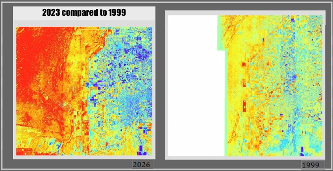
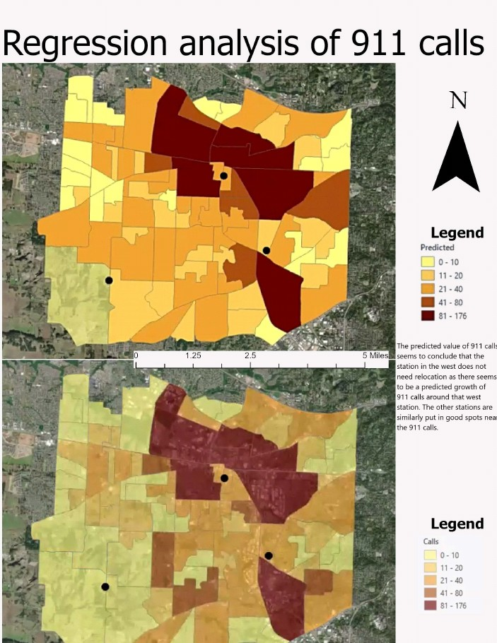
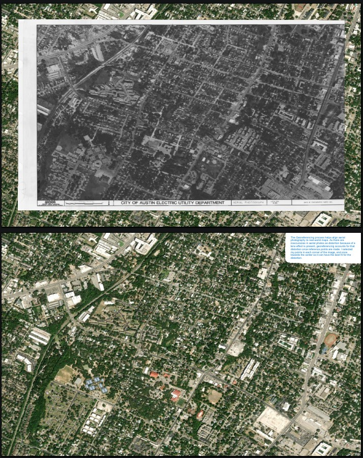
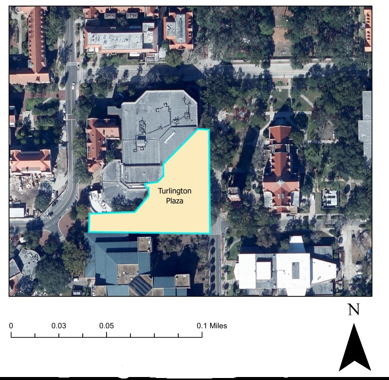
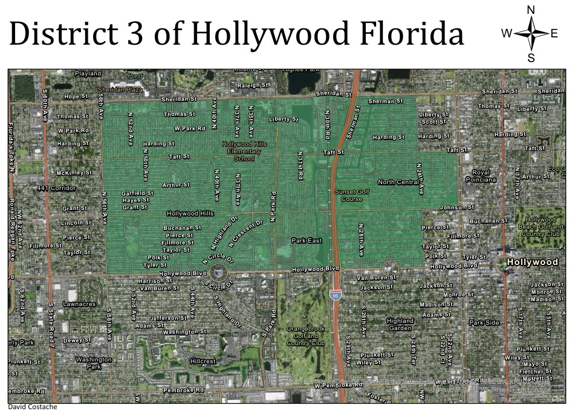
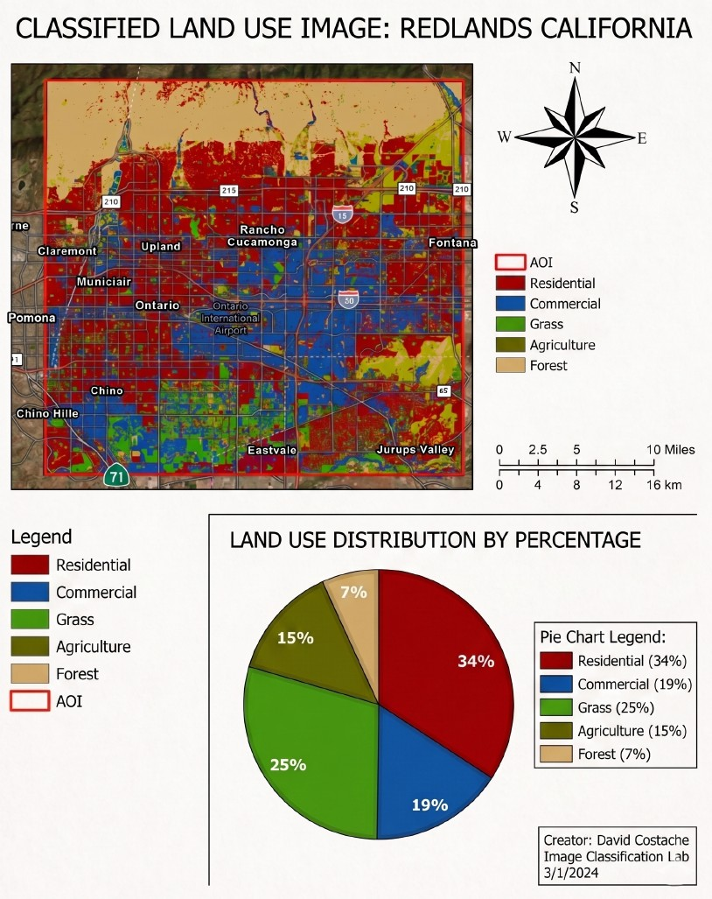

Geography Capstone Portfolio | Seeking Beginner GIS Analyst Roles
Motivated professional eager to leverage strong spatial analysis skills, foundational GIS programming, and hands-on mapping experience.

Analysis of spatial/temporal vegetation loss in Miami (1999-2023) using Landsat imagery to evaluate the impact of suburban sprawl on ecological health.
Remote Sensing NDVI Supervised Classification
Spatial regression analysis predicting 911 call densities to evaluate and optimize the future placement of emergency responder stations.
Regression Analysis Predictive Spatial Modeling
Analyzed unreferenced raw historical aerial photography of Austin utility maps to mathematically correct lens distortion and align data to a spatial coordinate system.
Georeferencing Distortion Correction
Digitized and localized layout mapping of Turlington Plaza at the University of Florida utilizing 0.5 ft high-resolution imagery.
Localized Projection Scaling High-Res Imagery Processing
Designed a professional, coherent reference map of District 3 in Hollywood, FL integrating multi-layer municipal geodatabase structures.
ArcGIS Pro Symbology Layout Design
Land cover classification of Redlands, CA utilizing graphical communication tools like proportional pie charts to map statistical land distribution.
Land Use Classification Data Visualization